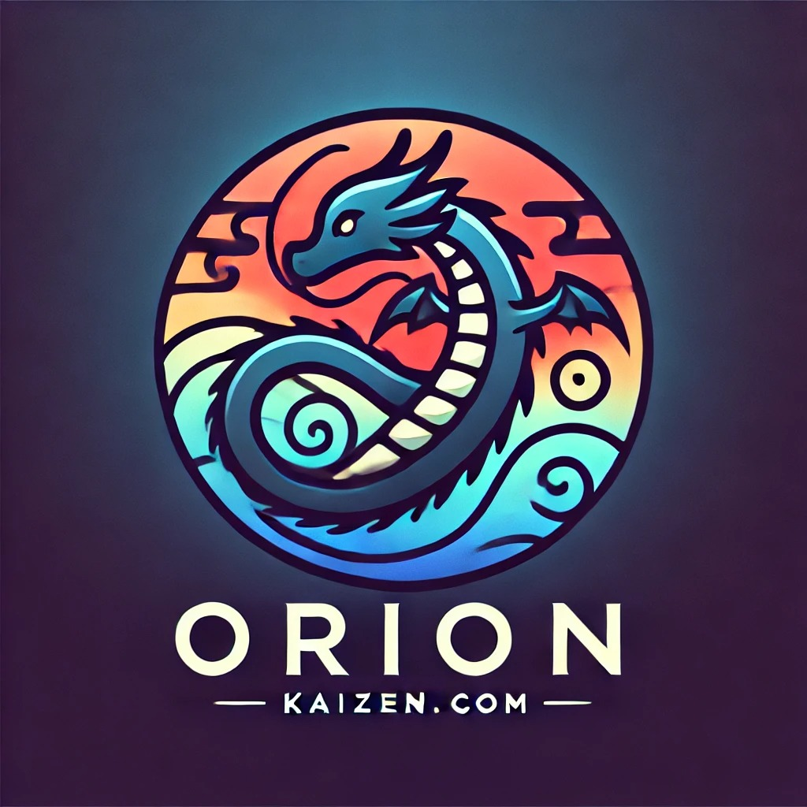

Bienvenido al sitio oficial de Orion Kaisen, un escritor apasionado por crear mundos de fantasía épica, donde cada aventura es un viaje de superación y cada desafío, una oportunidad para crecer. Inspirado por la mitología, los reinos místicos, y la filosofía del Kaizen, que significa "mejora continua", Orion lleva a sus lectores a través de tramas intensas donde el poder de la transformación personal es clave.
Orion Kaisen no solo escribe historias, sino que las vive junto a sus personajes. Desde temprana edad, se sintió atraído por los dragones, criaturas míticas que simbolizan poder, sabiduría y la capacidad de adaptarse al cambio. Este símbolo está representado en su logo, un dragón estilizado que rodea su nombre, recordándonos la importancia de evolucionar constantemente.
En sus obras, Orion combina elementos clásicos de la fantasía con temas profundos como la resiliencia, el liderazgo y la superación personal. Cada uno de sus protagonistas es desafiado a enfrentar sus propios límites y descubrir un poder interno que no sabían que poseían.
Libros
Las historias de Orion te transportan a mundos donde lo imposible se vuelve posible. Desde la lucha de héroes olvidados hasta la construcción de nuevas civilizaciones, sus libros te ofrecen más que entretenimiento: son una reflexión sobre el potencial humano. Algunos de sus títulos más populares incluyen:
"El Reino de las Sombras" – La travesía de un joven príncipe que descubre un antiguo secreto que cambiará el destino de su reino.
"La Llama Interior" – La historia de una guerrera que debe reconciliarse con su pasado para salvar su futuro.
Temáticas Clave
Fantasía épica: Con personajes complejos, criaturas míticas y escenarios vastos.
Superación personal: Inspirado en la filosofía Kaizen, Orion presenta protagonistas que crecen con cada prueba.
Mundos detallados: Cada universo creado por Orion es rico en historia, cultura y mitología.
Aventuras transformadoras: Sus historias invitan a los lectores a reflexionar sobre su propio camino de crecimiento.
Conéctate con Orion
Para obtener más información sobre Orion Kaisen, sus proyectos actuales y futuros lanzamientos, síguelo en sus redes sociales o suscríbete a su boletín para no perderte ninguna novedad.
Contacto
¿Interesado en colaborar con Orion o simplemente quieres compartir tus pensamientos sobre sus libros? Contáctalo a través del formulario en esta página y únete a su comunidad de lectores apasionados.